历史语义记忆
分离原始观测历史与可信聚合状态，仅允许通过可靠性门禁的信息进入诊断和锚点检索，抑制错误状态长期污染。
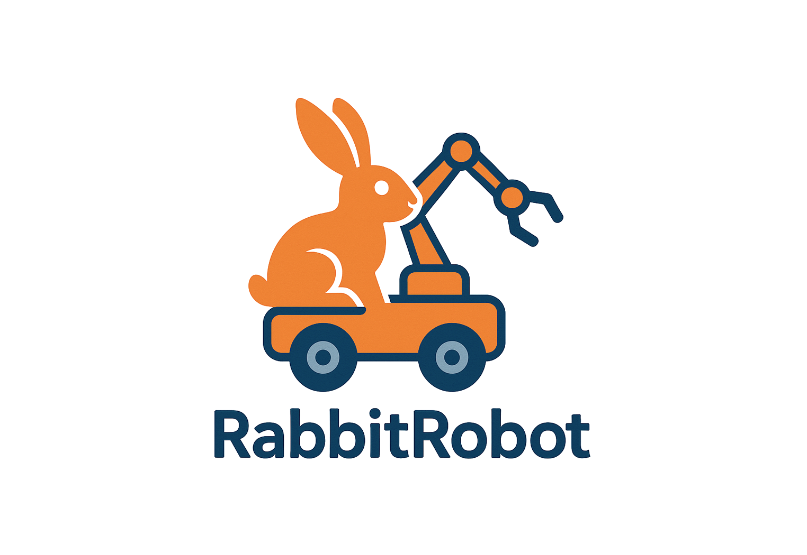
基于历史感知语义地图与动态空间推理的长程视觉语言导航纠错框架研究
History-Aware Semantic Mapping and Dynamic Spatial Reasoning for Long-Horizon Vision-and-Language Navigation Error Correction
Master Thesis Research Project
WORK IN PROGRESS · 2026.09长程视觉语言导航中的错误往往不是单步动作失误，而是跨房间、跨语言阶段累积形成的状态漂移。本研究提出 Rabbit-RobotNav：通过历史感知语义—空间记忆保存“去过哪里、看见什么、完成到哪一步”，再联合指令一致性、历史一致性与转移一致性判断当前状态是否偏离，并从可信历史中选择最近可靠状态作为恢复锚点。
证据分成两条不能混算的路线：MP3D 中的跨场景配对导航 A/B 与受控故障 smoke，以及 WheelTec 麦克纳姆轮底盘上的只读 RGB-D 在线语义建图。前者尚未证明导航指标提升；后者已接通相机、检测、深度反投影、时间戳 TF 与地图发布，但未运行自主导航或恢复动作。
METHOD
历史不是附加日志，而是诊断证据与恢复锚点。以下三张是目标系统架构图：其中真实 RGB-D 到只读语义地图已完成静止 smoke；诊断接管底盘、重规划与安全执行仍是后续集成目标。
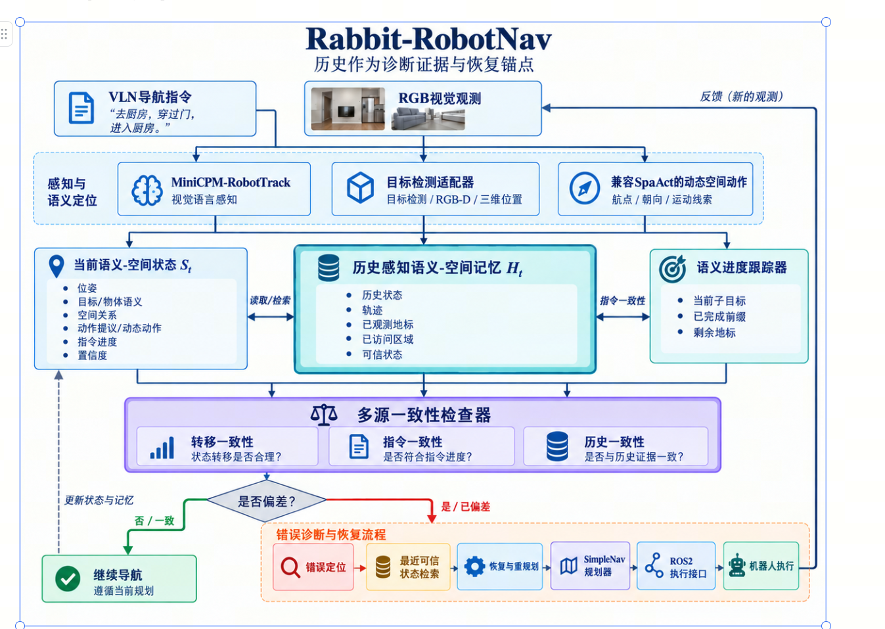
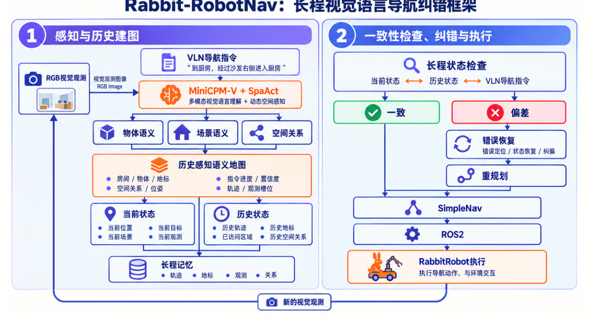
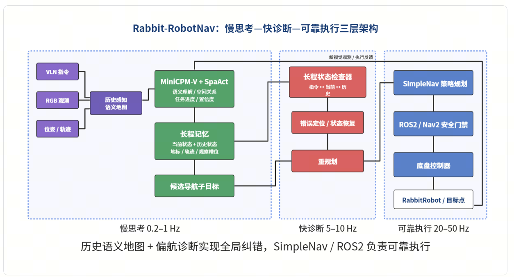
RESEARCH MAP
用于后续迭代的论文主线索引：同一张图持续连接研究问题、方法贡献、已获证据、失败案例和下一阶段实验。
Axton / Mermaid 可维护源：research-mindmap.mmd
CORE IDEAS
分离原始观测历史与可信聚合状态，仅允许通过可靠性门禁的信息进入诊断和锚点检索，抑制错误状态长期污染。
融合指令、历史与转移一致性发现偏航。评价标签只用于离线计分，不进入系统运行时决策。
从 trusted recovery trajectory 检索 Last Reliable State，并报告锚点依据与误差，不把“选对位置”提前写成“恢复完成”。
Axton / Mermaid 可维护源：system-flow.mmd
PRELIMINARY RESULTS
把跨场景导航负结果与单 episode 受控故障 smoke 分开呈现。历史图中的数字只描述当时的工程回放，不能替代多 episode 的正式统计。
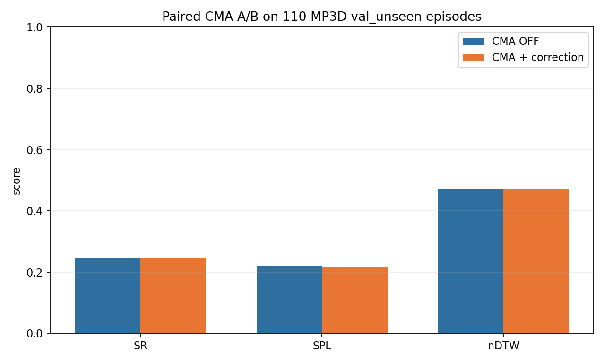
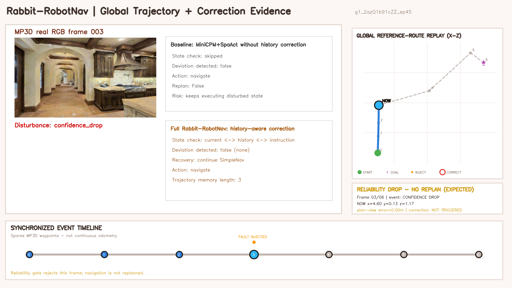
统计更正：早期“3 个种子 × 50 次、Full 检出 80/90”的消融图在审计后确认只重复了同一个 6 帧 episode，不能用作跨 episode 或跨场景证据；因此本页不展示该图，也不沿用其总体结论。以下四张是更早期的单场景故障案例，仅供理解故障类型。
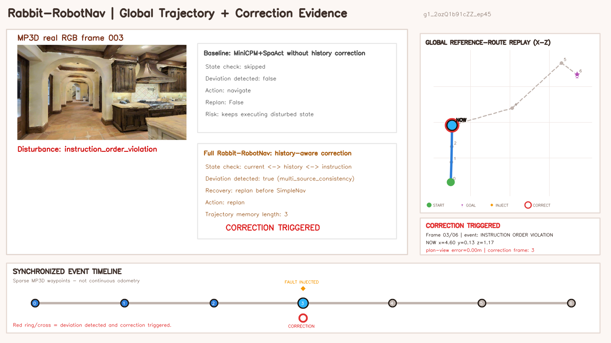
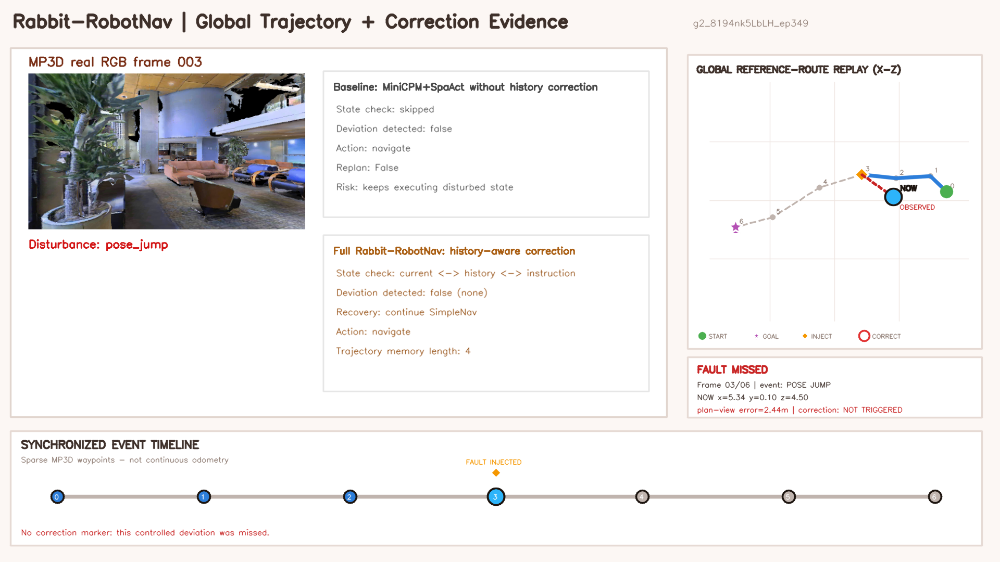
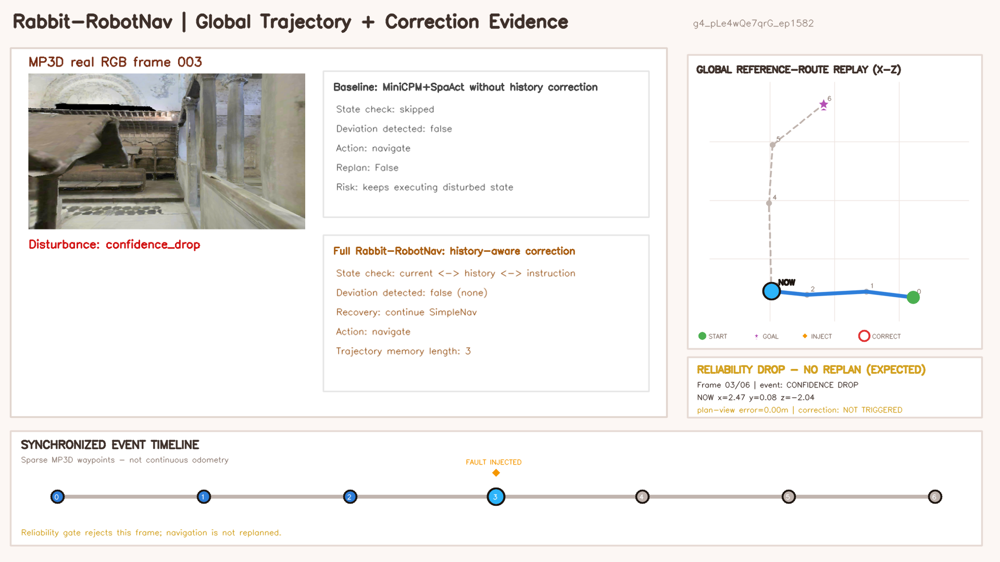
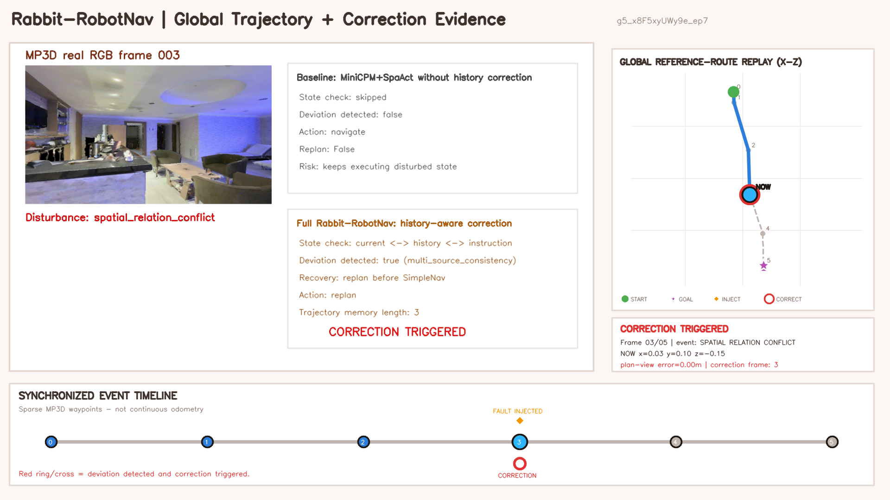
REAL ROBOT · READ-ONLY
2026-09-23 的最新代码新增独立 ROS 2 语义建图层。Astra 的 RGB、注册深度与 Color CameraInfo 同步后，经 YOLO-World、有效深度中值、图像时刻 TF 进入 odom_combined 语义对象地图。该链路只读，不发布 cmd_vel。
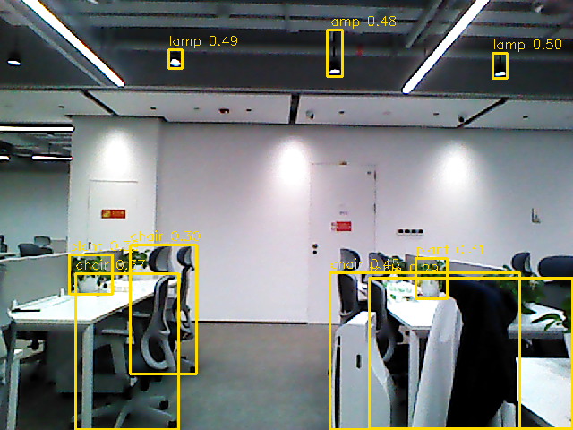
plant 误检；黄色框证明检测输出可视化，不证明物体类别、跨视角 ID 或导航决策正确。查看原始证据与限制 ↗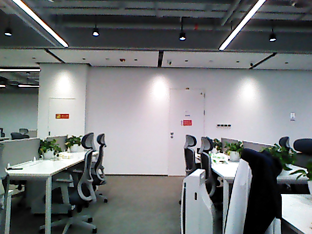
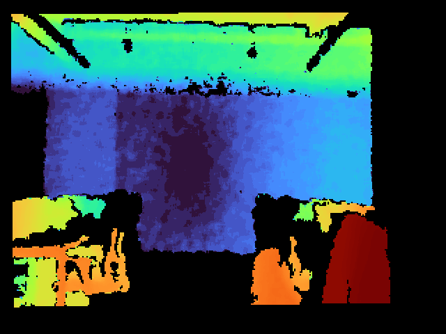
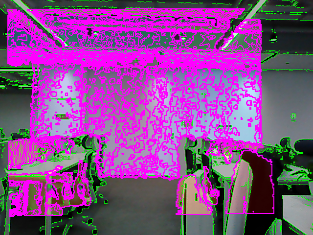
验收边界：20 个 ROS 2 单测、112 个原仓库测试与选择性构建已通过；约 25 秒静止 smoke 的 MarkerArray topic 有发布者，但服务器未安装 RViz，未取得真实渲染画面。多视角同物体关联、同类物体分离、检测精度与真实运动中的时间同步均未验证。查看诊断 JSON ↗
SCOPE & LIMITATIONS
NEXT STEPS
准备互不重复的多 episode、多指令与至少两个 scene；当前单 episode 清单仅允许 smoke，不得靠重复运行扩大独立样本数。
Full、NoHistoryMap 与 B0–B6 共享感知缓存和故障日程；另以 action-aligned 数据评测转移一致性，MP3D 稀疏回放不承担该指标。
补充动作、位姿、时间和里程计连续性证据，形成至少 30 例可回读失败画廊。
先补多视角、同类物体分离与 RViz 实际渲染证据；再进入无控制权 shadow，最终在急停、限速和人工监护下验证低速路线。
PROJECT RESOURCES